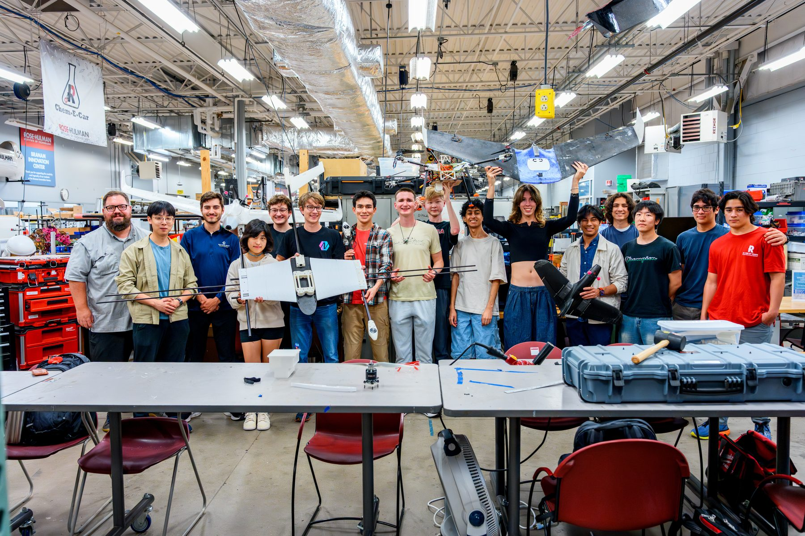
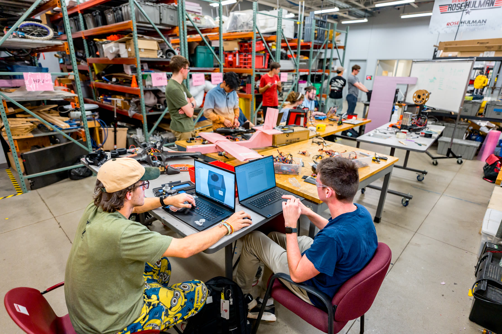
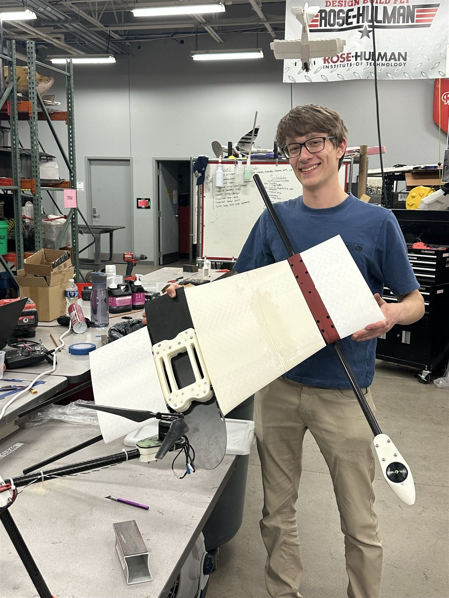

Aircraft Structures
Airframe design, CAD, manufacturing, propulsion installation, and mechanical repairs.
- Wing, fuselage, and tail design
- Composite parts, lift booms, mounts, and landing gear
- Fit checks, structural changes, and field repairs
Rose-Hulman student organization
Rose Aerial Systems is Rose-Hulman's student aerial robotics research and competition team. We bring students together to design, build, test, and document unmanned aircraft and autonomous flight systems.


We bring together students who are curious about flight, aircraft design, and autonomous aerial vehicles, then give them room to turn that curiosity into practical work. Members move from requirements and analysis through manufacturing, controls, perception, integration, ground testing, and flight testing.
SUAS is one major program within Rose Aerial Systems, alongside Design Build Fly. Competition gives the team a demanding shared mission, but our work is broader than one event: members also pursue project research and development, build classroom and practical skills, and document what they learn for the teams that follow.
Members can focus on one area or move between them as they learn. A flight test usually needs people from all four.
Airframe design, CAD, manufacturing, propulsion installation, and mechanical repairs.
Power distribution, flight controls, navigation sensors, pilot links, telemetry, and the ground station.
Mission software, simulation, camera integration, detection, mapping, and target location.
Payload hardware, release logic, procedures, and delivery testing.
During the 2025-2026 season, the team designed and built MeadowHawk, a five-motor VTOL fixed-wing aircraft. On July 21, MeadowHawk flew six autonomous waypoint laps in VTOL mode for more than one mile, completing the competition proof-of-flight requirement. Fixed-wing transition and the full search-and-delivery mission remained separate integration work.

Approved member profiles are added here as photos and biographies are received.
Rose Aerial Systems welcomes companies, alumni, and individual supporters who want to invest in hands-on aerospace education. Sponsorship helps with aircraft materials, avionics, flight testing, travel, and competition costs.
Rose-Hulman students can talk with the team on Discord or contact us by email. Flight, build, and competition updates are posted on our public channels.
Email: rhitsuas@gmail.com